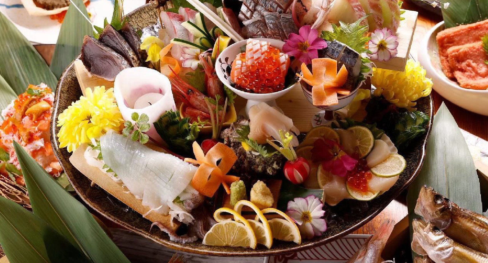
| 営業時間 | 17:00〜24:00（L.O.23:30） |
|---|---|
| 定休日 | 月曜（ほかに大晦日・元旦） |
| 住所 | 鳥取県米子市明治町140 米子駅前パーキングビル1F |
| 予約 | 推奨 — ☎ 0859-31-5678 ／ 公式サイト |
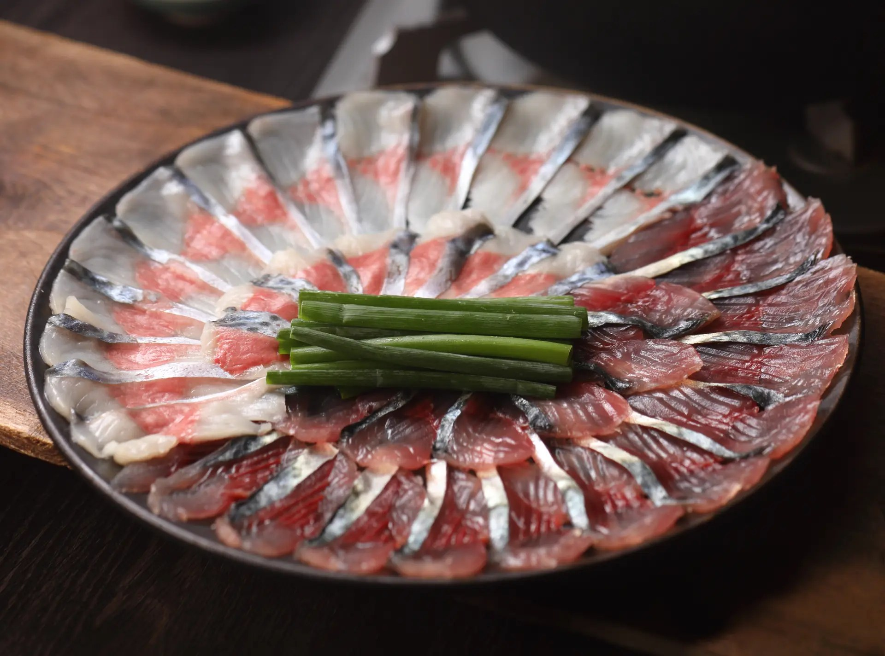
| 営業時間 | 16:30〜24:00（L.O.23:30） |
|---|---|
| 定休日 | 日曜 |
| 住所 | 鳥取県米子市明治町227 |
| 予約 | 推奨 — ☎ 0859-21-2606 |
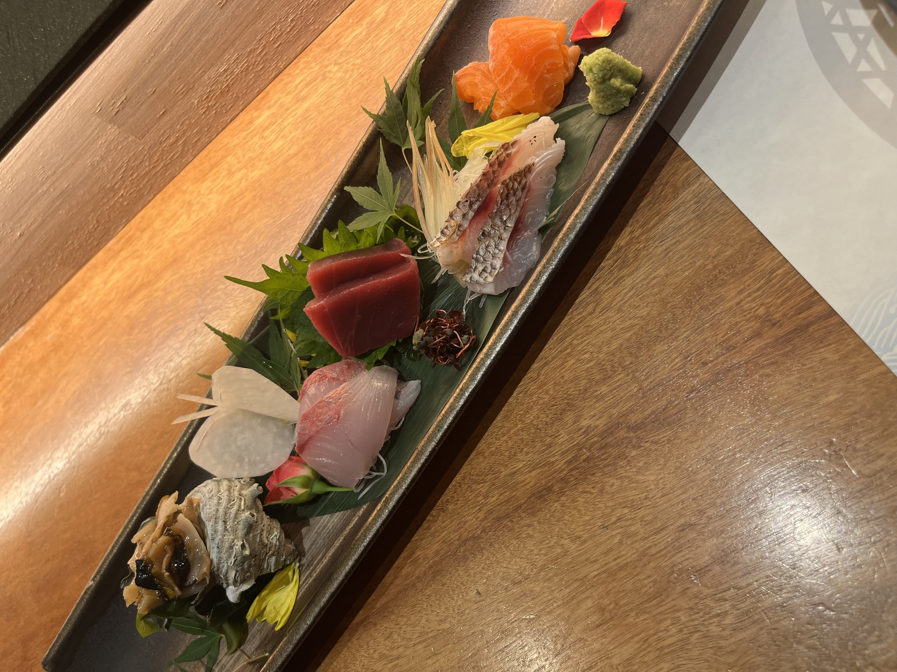
| 営業時間 | 12:00〜14:00（月〜木）, 17:30〜22:00（L.O.21:00／月〜木）, 17:30〜23:00（L.O.22:00／金・土） |
|---|---|
| 定休日 | 日曜 |
| 住所 | 鳥取県米子市角盤町2丁目57 |
| 予約 | 推奨 — ☎ 0859-21-2167 ／ 公式サイト |
| 営業時間 | 11:30〜15:00（要予約）, 17:00〜22:30（公式サイト下部には11:30〜17:00／17:00〜23:00という別表記もある） |
|---|---|
| 定休日 | 不定休（日曜・祝日は要確認） |
| 住所 | 鳥取県米子市朝日町47 |
| 予約 | 要 — ☎ 0859-33-1277 ／ 公式サイト |
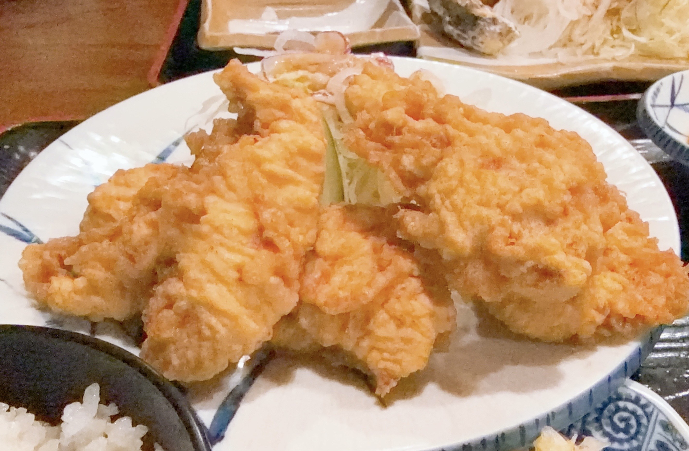
| 営業時間 | 11:30〜14:00（L.O.13:00）, 18:00〜21:00（L.O.19:30） |
|---|---|
| 定休日 | 日曜（祝祭日は昼のみ営業） |
| 住所 | 鳥取県米子市中町48 |
| 予約 | 不可 — ☎ 0859-22-3519 ／ 公式サイト |
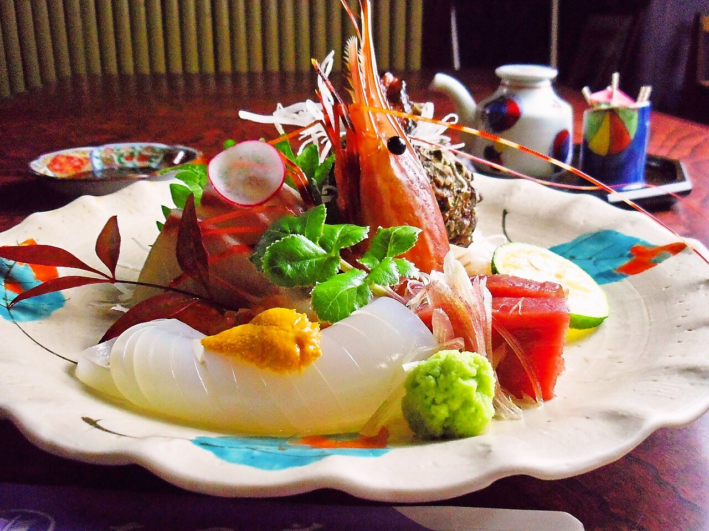
| 営業時間 | 18:00〜21:30（料理L.O.21:00／ネタが無くなり次第閉店する場合あり） |
|---|---|
| 定休日 | 月曜・隔週日曜 |
| 住所 | 鳥取県米子市皆生温泉3-7-3 |
| 予約 | 推奨 — ☎ 0859-22-5478 |
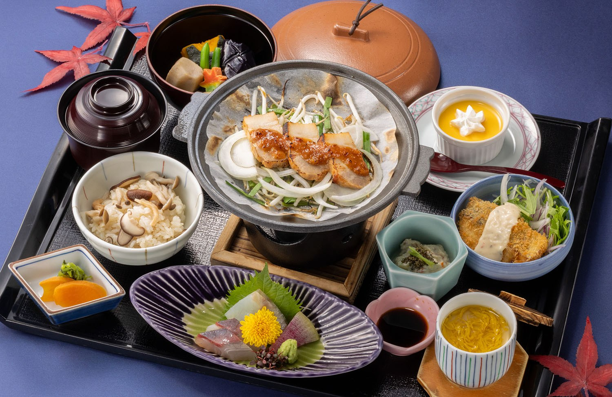
| 営業時間 | 11:30〜14:30（料理L.O.14:00）, 17:00〜21:00（料理L.O.20:30） |
|---|---|
| 定休日 | 無休 |
| 住所 | 鳥取県米子市久米町53-2 ANAクラウンプラザホテル米子1階 |
| 予約 | 推奨 — ☎ 0859-36-1111 ／ 公式サイト |
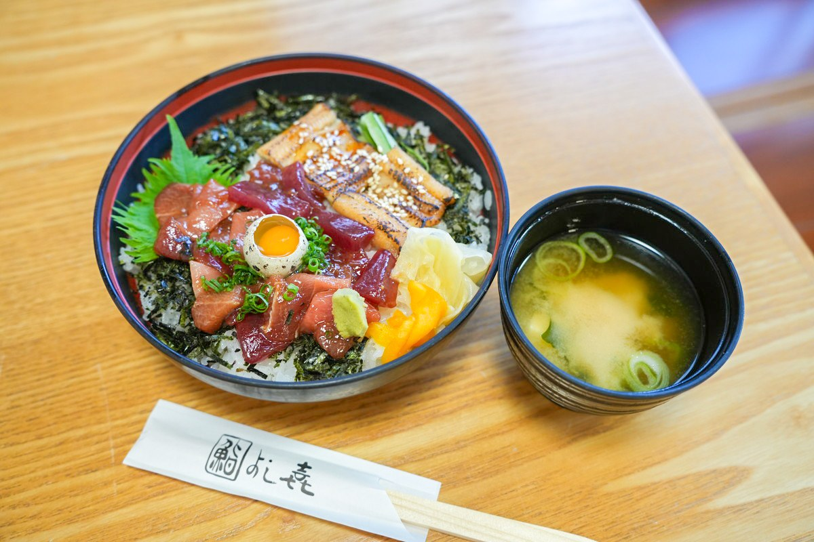
| 営業時間 | 【昼】11:30〜13:30／【夜】18:00〜22:00（シャリが無くなり次第閉店） |
|---|---|
| 定休日 | 日曜・祝日 |
| 住所 | 鳥取県米子市道笑町4-12-15 |
| 予約 | 可（ただし昼は予約不可） — ☎ 0859-21-5728 |
| 営業時間 | 18:00〜21:00（食事の開始は18:00・18:30・19:00から選択） |
|---|---|
| 定休日 | 不定休（事前に問い合わせ） |
| 住所 | 鳥取県米子市皆生温泉3丁目15-55 |
| 予約 | 要 — ☎ 0859-22-4195 |
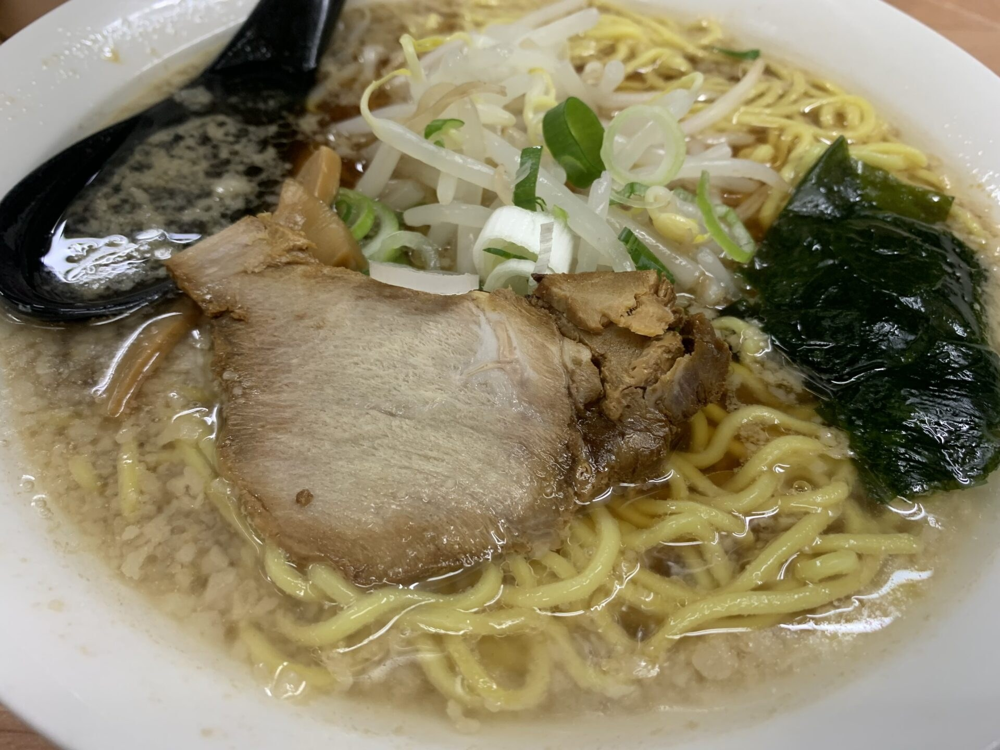
| 営業時間 | 11:00〜22:45 |
|---|---|
| 定休日 | 日曜 |
| 住所 | 鳥取県米子市弥生町1 |
| 予約 | 不要 — ☎ 0859-33-7857 |
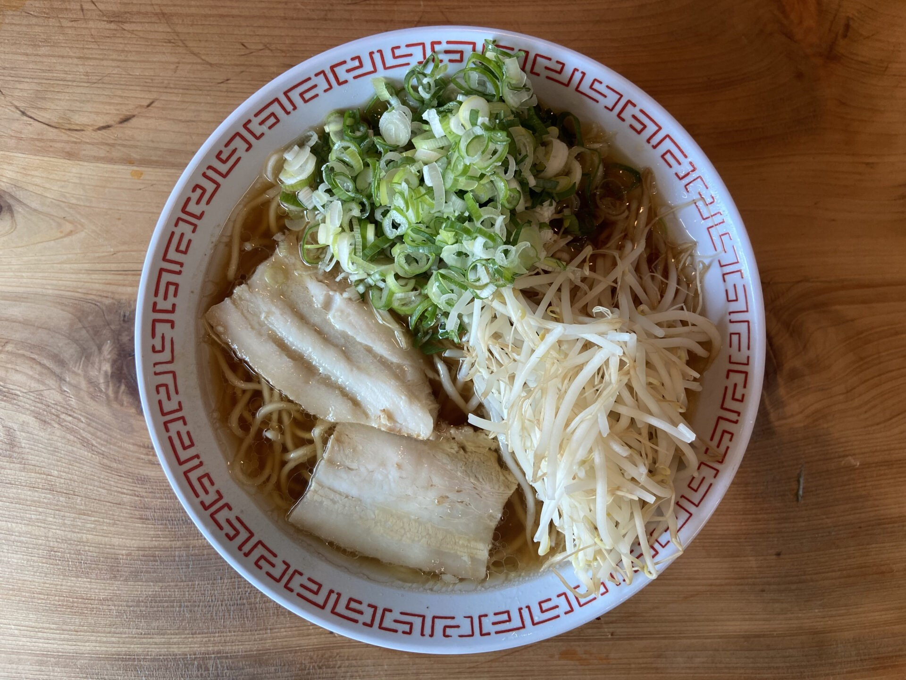
| 営業時間 | 11:30〜14:00（L.O.13:30）, 17:00〜21:00（L.O.20:30） |
|---|---|
| 定休日 | 水曜 |
| 住所 | 鳥取県米子市灘町2-104 |
| 予約 | 不要 — ☎ 0859-34-1147 |
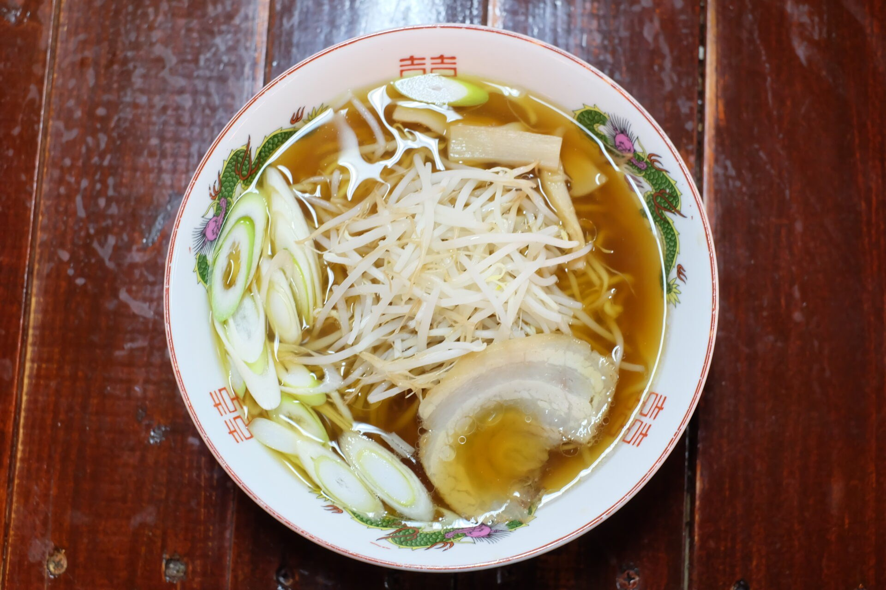
| 営業時間 | 17:00〜25:00（翌1:00） |
|---|---|
| 定休日 | 日曜 |
| 住所 | 鳥取県米子市万能町169 |
| 予約 | 可 — ☎ 0859-21-1009 ／ 公式サイト |
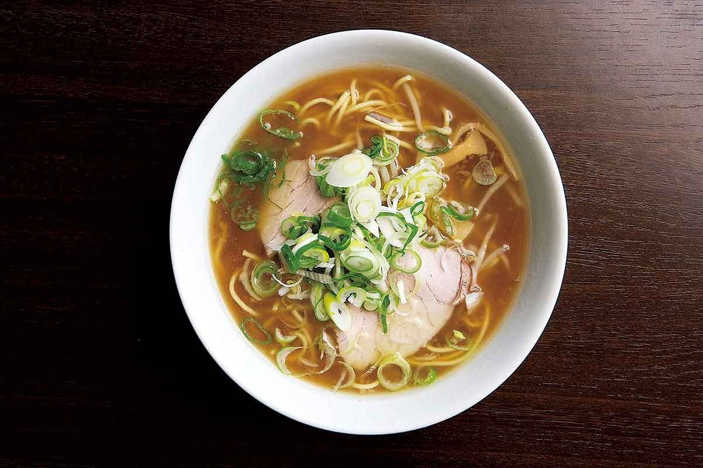
| 営業時間 | 11:00〜18:00（麺がなくなり次第終了） |
|---|---|
| 定休日 | 月曜・第3火曜 |
| 住所 | 鳥取県米子市西福原9-21-15 |
| 予約 | 不要 — ☎ 0859-22-9405 |
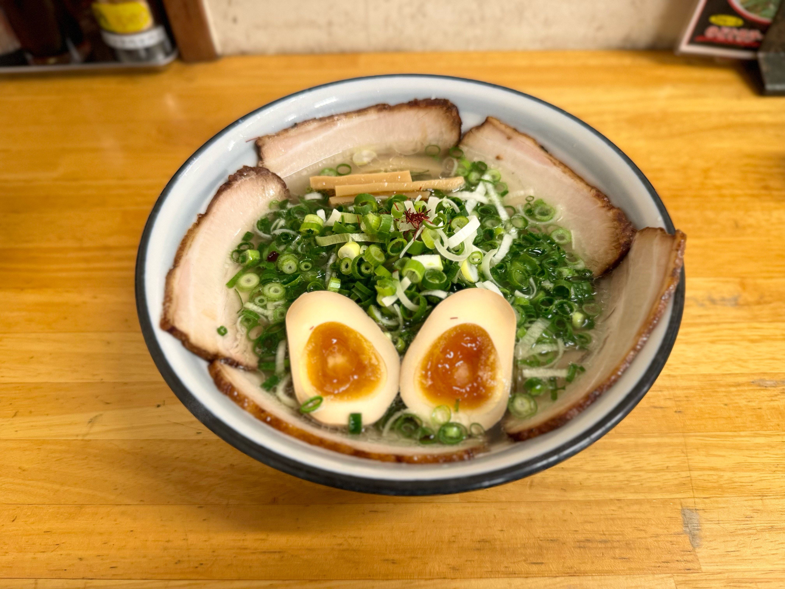
| 営業時間 | 11:00〜14:30, 17:30〜20:30 |
|---|---|
| 定休日 | 水曜 |
| 住所 | 鳥取県米子市新開6-3-3 |
| 予約 | 不要 — ☎ 0859-31-8681 |
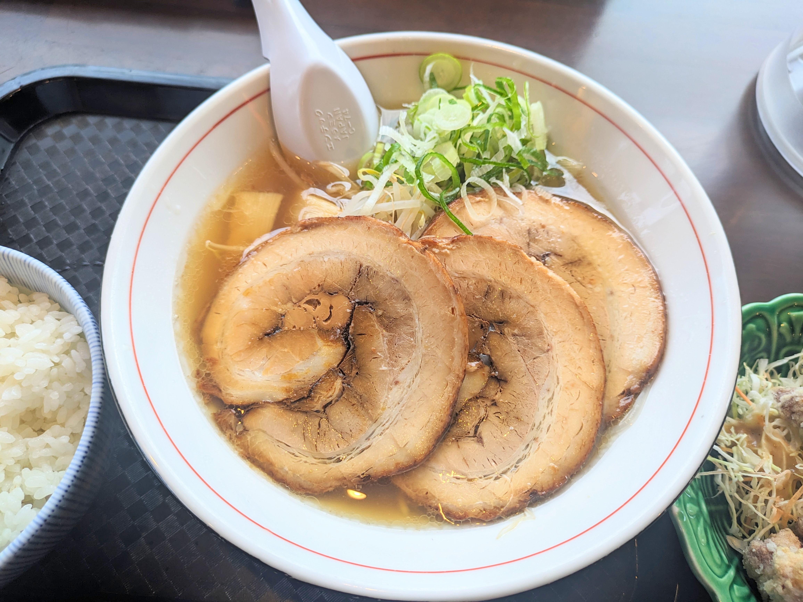
| 営業時間 | 11:00〜14:30（L.O.14:00）, 17:30〜20:00（L.O.19:30） |
|---|---|
| 定休日 | 木曜（火曜夜・水曜夜・第3水曜も休み。臨時休業あり） |
| 住所 | 鳥取県米子市尾高2773-3 |
| 予約 | 不要 — ☎ 0859-57-7347 |
| 営業時間 | 11:00〜14:30 |
|---|---|
| 定休日 | 火曜・水曜・第2月曜 |
| 住所 | 鳥取県米子市皆生温泉4丁目1-20 |
| 予約 | 不可 — ☎ 0859-34-6008 |
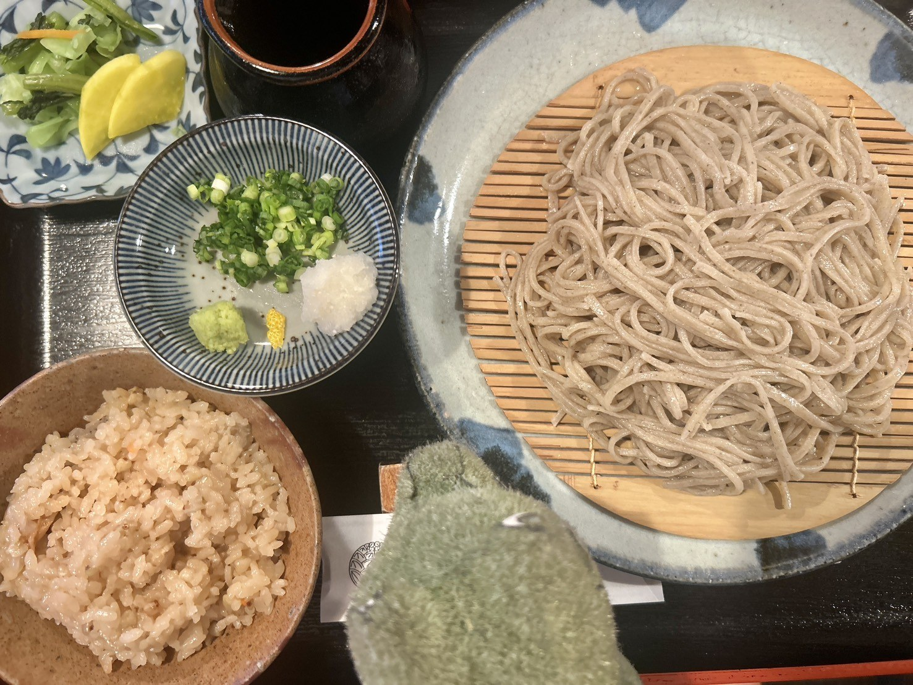
| 営業時間 | 11:30〜14:00（L.O.13:45・売り切れ次第終了） |
|---|---|
| 定休日 | 日曜・月曜・祝日（臨時休業あり） |
| 住所 | 鳥取県米子市加茂町1丁目10 |
| 予約 | 不可 — ☎ 0859-34-1129 |
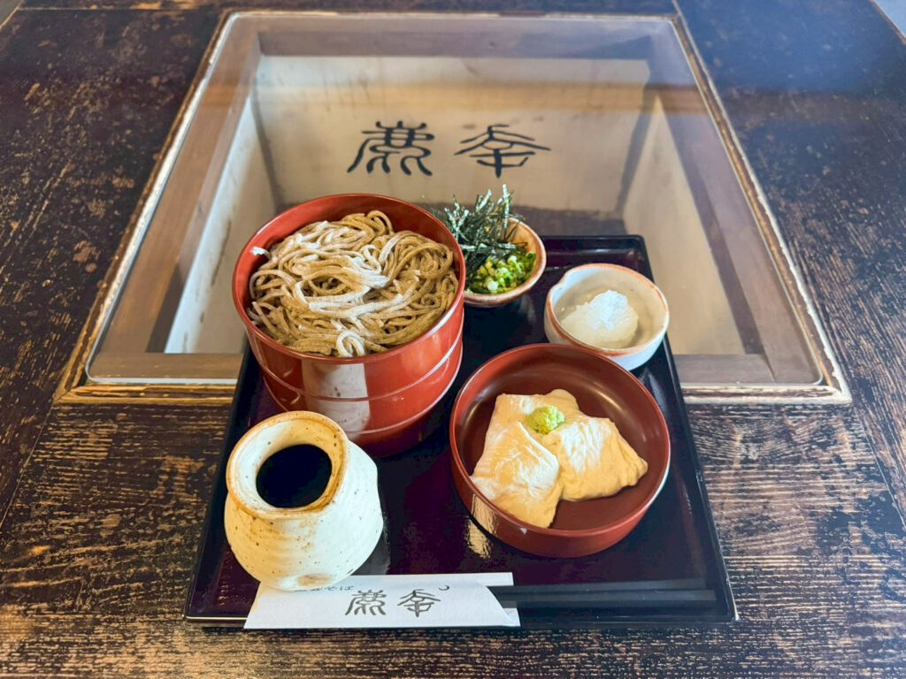
| 営業時間 | 11:00〜14:30（売り切れ次第終了） |
|---|---|
| 定休日 | 火曜日ほか不定休 |
| 住所 | 鳥取県米子市米原9丁目3-20 東亜青果卸売市場内 |
| 予約 | 不要 |
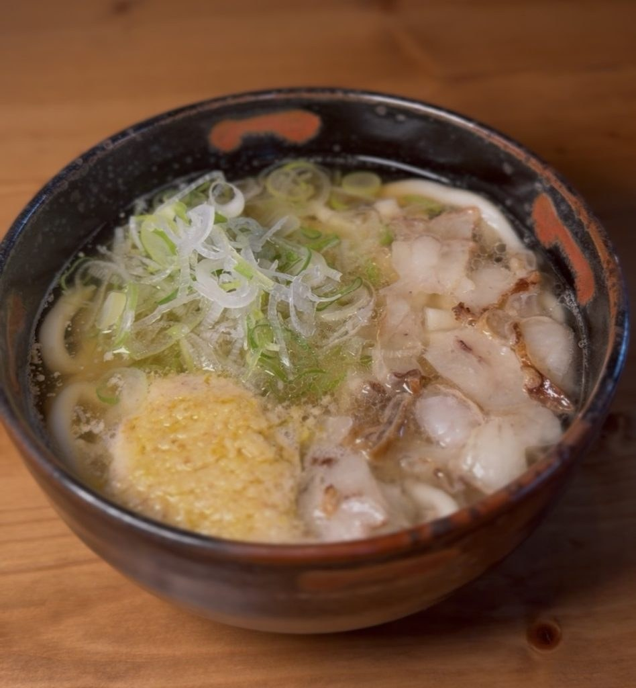
| 営業時間 | 11:30〜13:30（L.O.／水・木・金曜のみ）、18:00〜23:30（L.O.／水〜日曜） |
|---|---|
| 定休日 | 月曜・火曜 |
| 住所 | 鳥取県米子市花園町14 |
| 予約 | 可 — ☎ 090-7993-5696 |
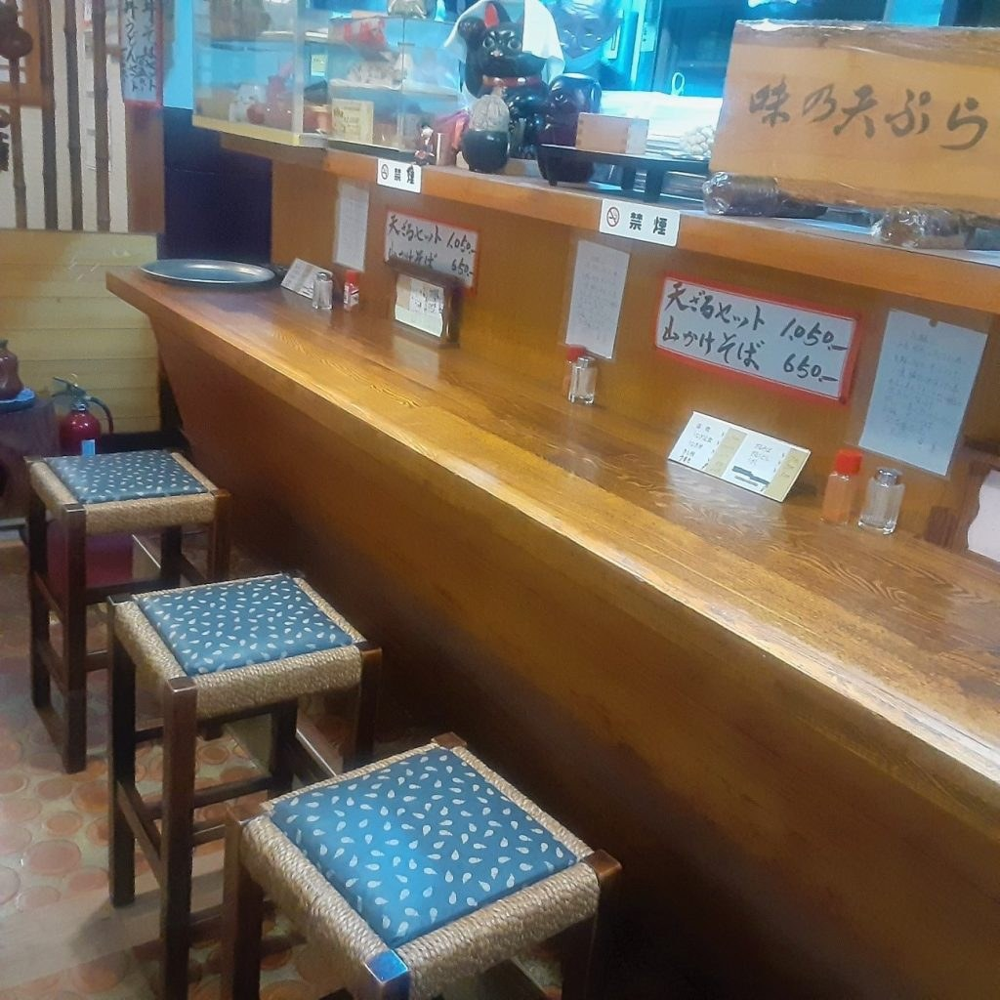
| 営業時間 | 11:00〜15:00 |
|---|---|
| 定休日 | 火曜日 |
| 住所 | 鳥取県米子市角盤町1-71 |
| 予約 | 不要 — ☎ 0859-22-7516 |
| 営業時間 | 11:00〜14:00、17:00〜22:00（L.O.21:30） |
|---|---|
| 定休日 | 年末年始・不定休 |
| 住所 | 鳥取県米子市末広町149 |
| 予約 | 可 — ☎ 0859-22-4895 ／ 公式サイト |
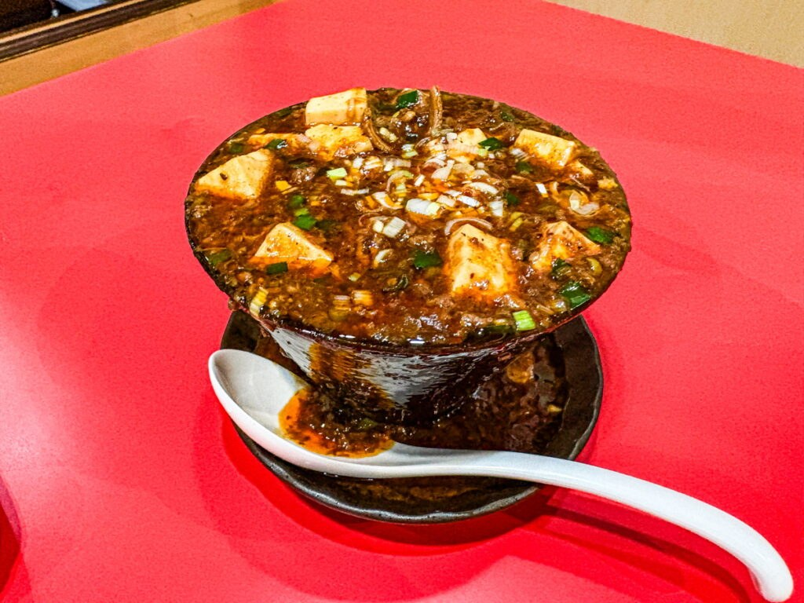
| 営業時間 | 不明 |
|---|---|
| 定休日 | 不明 |
| 住所 | 鳥取県米子市明治町195 |
| 予約 | 可 — ☎ 050-5448-7487 |
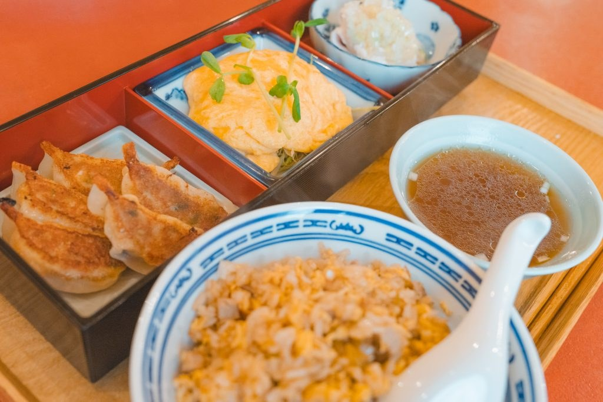
| 営業時間 | 11:00〜14:00、17:30〜21:00 |
|---|---|
| 定休日 | 月曜・第2および第4火曜 |
| 住所 | 鳥取県米子市西福原7-12-27 |
| 予約 | 推奨 — ☎ 0859-32-1035 |
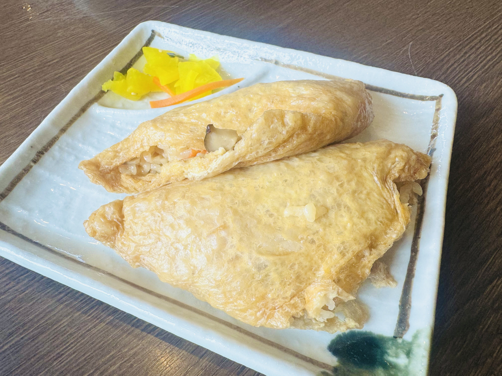
| 営業時間 | 月〜金 11:00〜15:30（料理L.O.15:20）／土・日・祝 11:00〜15:00 |
|---|---|
| 定休日 | 毎月第3火曜日（祝日の場合は翌水曜日）・1月1日〜4日 |
| 住所 | 鳥取県米子市彦名町4123-3 |
| 予約 | 不要 — ☎ 0859-24-0043 |
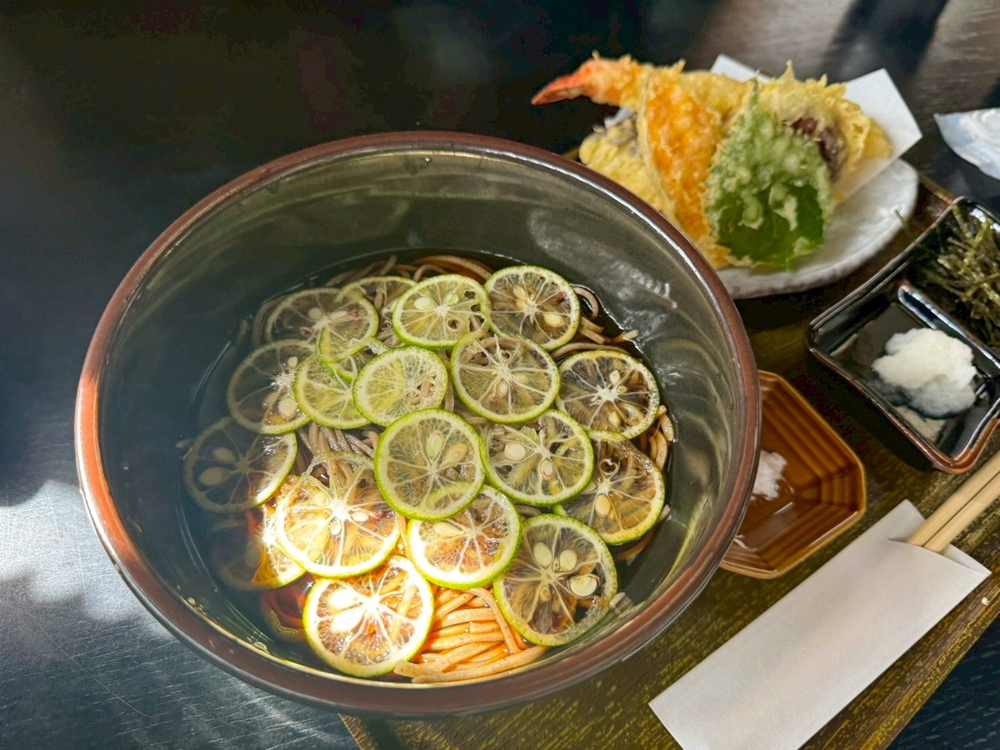
| 営業時間 | 11:00〜15:30 |
|---|---|
| 定休日 | 木曜日 |
| 住所 | 鳥取県米子市旗ヶ崎8丁目5-17 |
| 予約 | 不要 — 公式サイト |
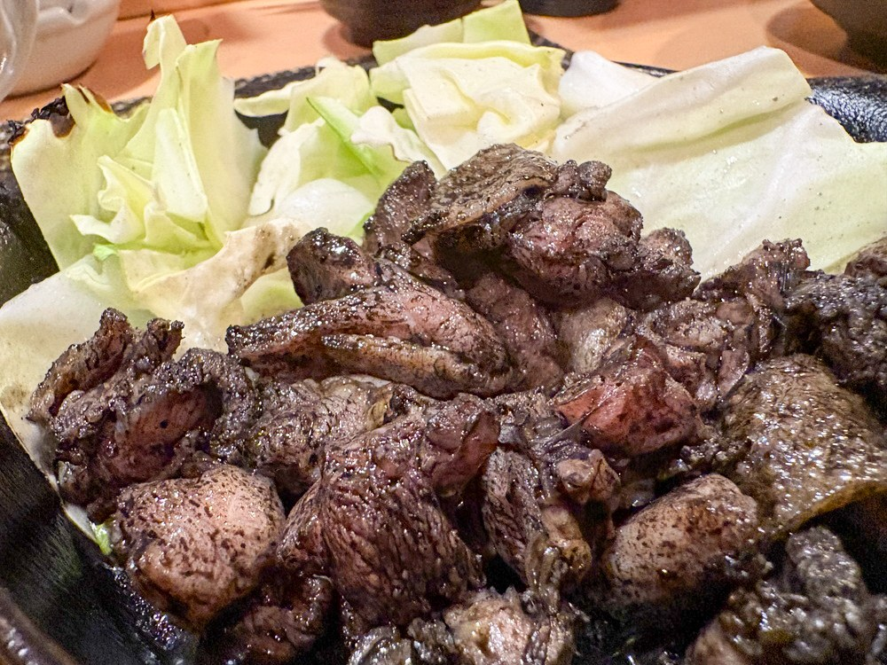
| 営業時間 | 18:00〜24:00 |
|---|---|
| 定休日 | 日曜 |
| 住所 | 鳥取県米子市朝日町14 |
| 予約 | 可 — ☎ 0859-34-9890 |
| 営業時間 | 【ランチ】火〜木 11:30〜14:00（L.O.13:30／4名以上・前日までの完全予約制）、金・土 11:30〜14:00（L.O.13:30）【ディナー】火〜土 17:00〜24:00（L.O.23:00） |
|---|---|
| 定休日 | 日曜・月曜（2026年は10月11日(日)・11月2日(月)・11月22日(日)は営業、10月13日(火)は振替休業） |
| 住所 | 鳥取県米子市朝日町58-11 |
| 予約 | 推奨 — ☎ 0859-22-0070 ／ 公式サイト |
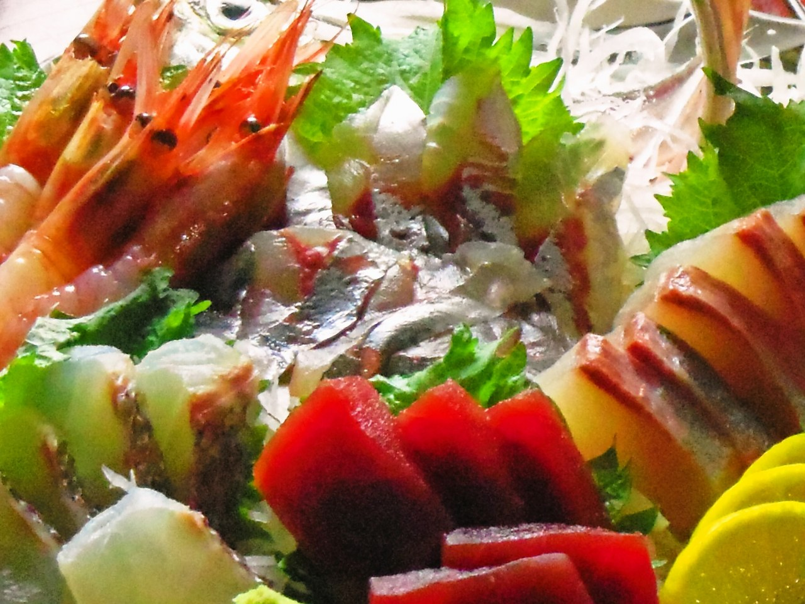
| 営業時間 | 月〜木 18:00〜22:00（L.O.21:30）／金・土 18:00〜23:00（L.O.22:30） |
|---|---|
| 定休日 | 日曜・祝日 |
| 住所 | 鳥取県米子市朝日町62 |
| 予約 | 推奨 — ☎ 0859-23-3517 |
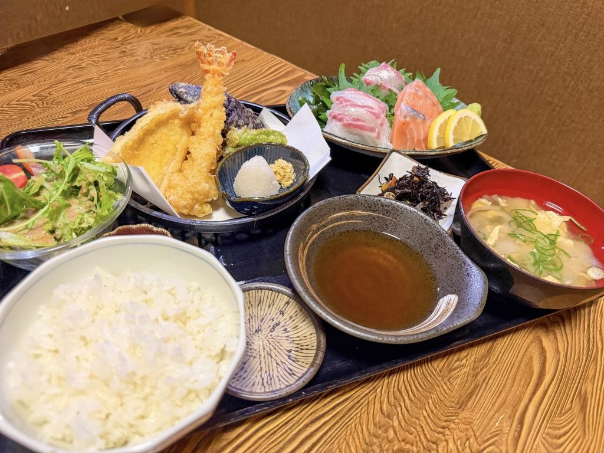
| 営業時間 | 【ランチ】11:00〜16:00（L.O.15:00）【ディナー】17:00〜24:00（L.O.23:00） |
|---|---|
| 定休日 | 不定休 |
| 住所 | 鳥取県米子市明治町196 |
| 予約 | 推奨 — ☎ 0859-21-5645 ／ 公式サイト |
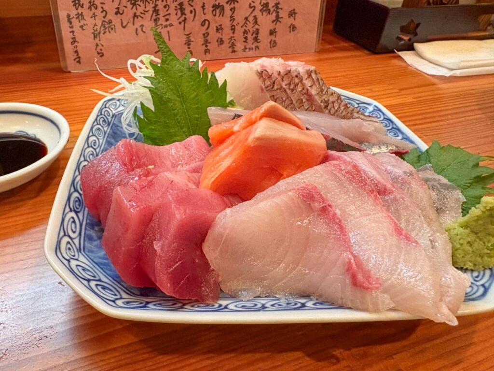
| 営業時間 | 17:30〜22:00 |
|---|---|
| 定休日 | 日曜 |
| 住所 | 鳥取県米子市茶町44-1 |
| 予約 | 可 — ☎ 0859-22-6026 |
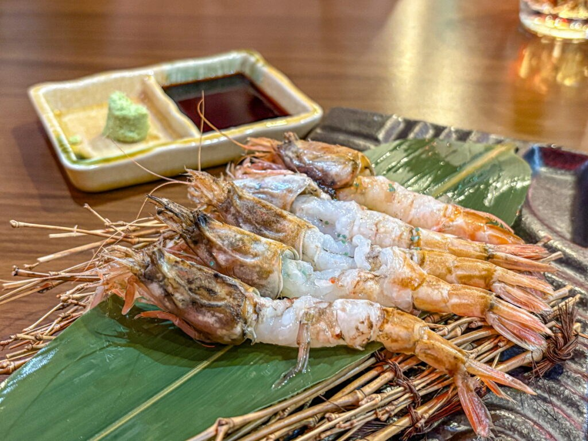
| 営業時間 | 18:00〜翌1:00 |
|---|---|
| 定休日 | 日曜 |
| 住所 | 鳥取県米子市皆生温泉4-26-15 |
| 予約 | 不要 — ☎ 0859-21-5805 |
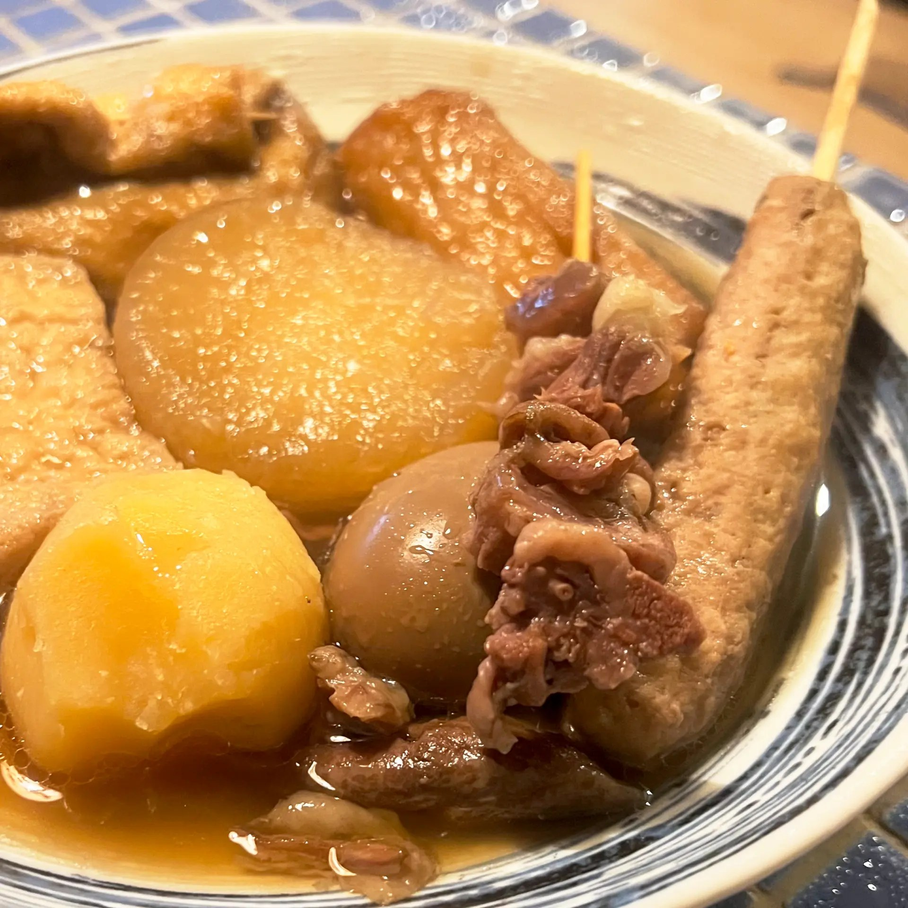
| 営業時間 | 17:00〜23:00（L.O.22:30）／金・土 17:00〜24:00 |
|---|---|
| 定休日 | 水曜 |
| 住所 | 鳥取県米子市明治町273 |
| 予約 | 可 — ☎ 0859-21-1250 ／ 公式サイト |
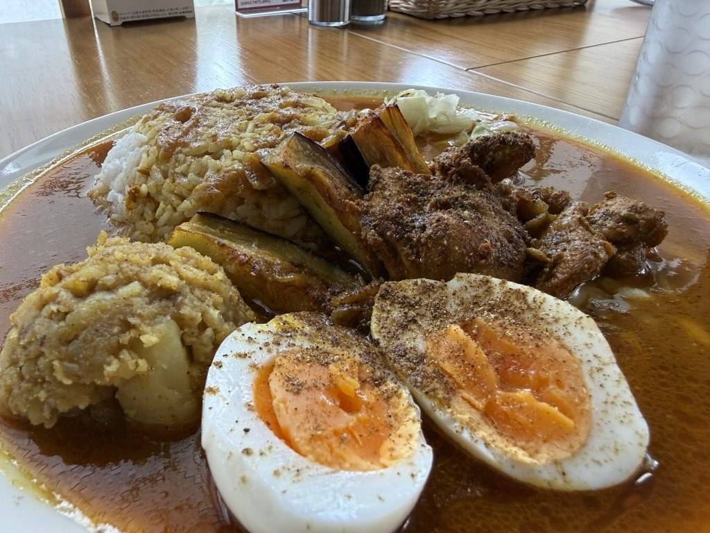
| 営業時間 | 11:00〜14:30（L.O.14:00）, 木金土のみ 18:00〜21:00（L.O.20:30） |
|---|---|
| 定休日 | 不定休 |
| 住所 | 鳥取県米子市米原9丁目11-12 |
| 予約 | 可（夜のスパイスカレー鍋は要予約） — 公式サイト |
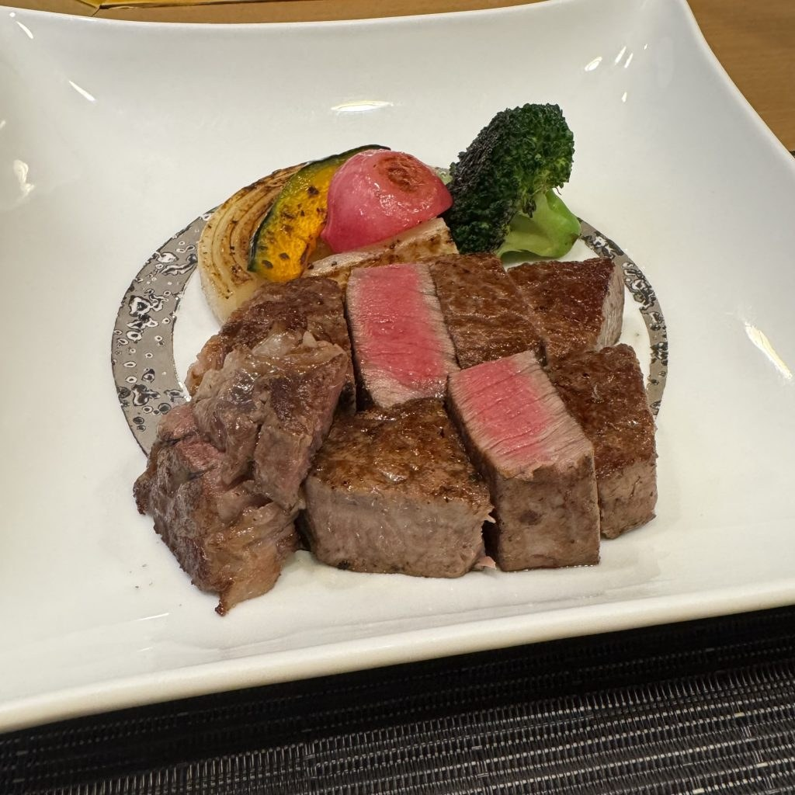
| 営業時間 | 11:30〜14:30（L.O.13:30）, 17:30〜21:00（L.O.20:30） |
|---|---|
| 定休日 | 火曜（ほか不定休） |
| 住所 | 鳥取県米子市皆生温泉2丁目5-1 |
| 予約 | 要（完全予約制。予約は皆生つるやで受付） — ☎ 0859-22-6181 ／ 公式サイト |
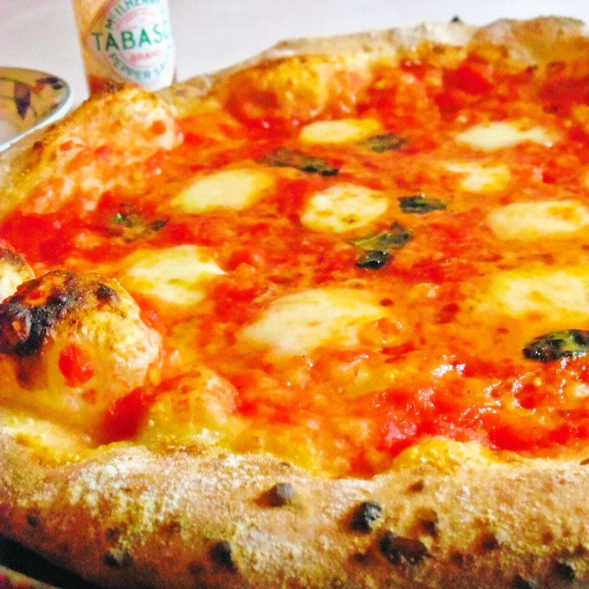
| 営業時間 | 11:00〜15:00（L.O.14:00）, 17:00〜22:00（L.O.21:00） |
|---|---|
| 定休日 | 月曜 |
| 住所 | 鳥取県米子市四日市町46 |
| 予約 | 可（席のみの予約は電話で） — ☎ 0859-30-2955 ／ 公式サイト |
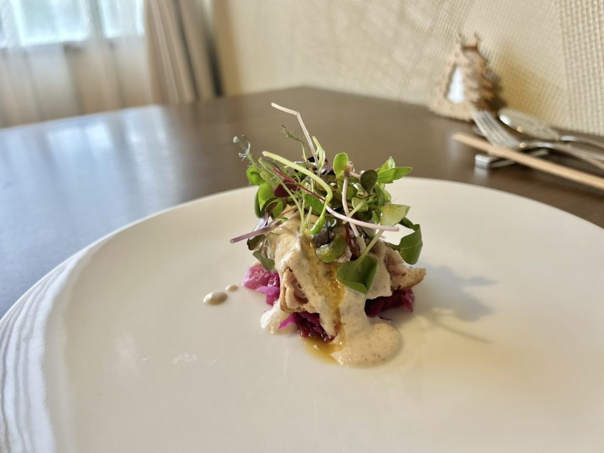
| 営業時間 | 11:30〜12:30（最終入店）, 18:00〜19:30（最終入店） |
|---|---|
| 定休日 | 月曜 |
| 住所 | 鳥取県米子市角盤町2丁目46 |
| 予約 | 要（完全予約制・コースのみ。前日まで、日祝のディナーは2日前までに電話で） — ☎ 0859-30-3960 ／ 公式サイト |
| 営業時間 | 11:00〜19:00 |
|---|---|
| 定休日 | 火曜（資料により火曜・日曜とするものもある） |
| 住所 | 鳥取県米子市茶町14 |
| 予約 | 不要 — ☎ 0859-33-8170 |
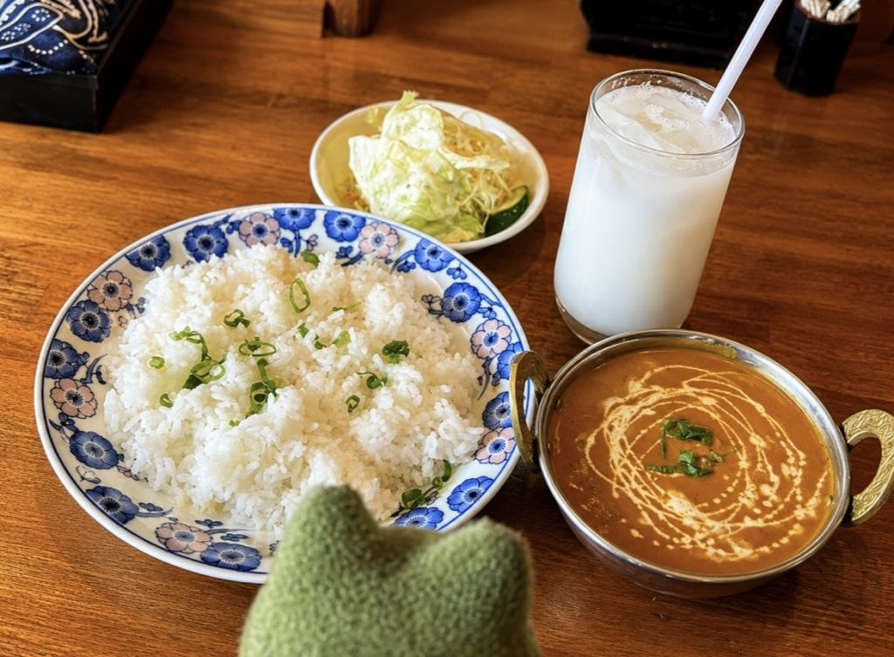
| 営業時間 | 11:00〜15:00, 17:00〜22:00 |
|---|---|
| 定休日 | 不定休 |
| 住所 | 鳥取県米子市中町14-9 |
| 予約 | 可 — ☎ 0859-21-8442 ／ 公式サイト |
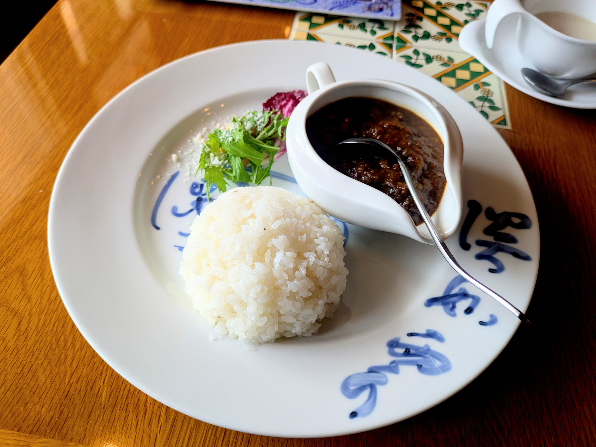
| 営業時間 | 【昼】11:30〜14:00／【夜】18:00〜20:00 |
|---|---|
| 定休日 | 月曜日 |
| 住所 | 鳥取県米子市西福原3丁目1-11 |
| 予約 | 推奨（パエリア・オードブル・弁当は要予約） — ☎ 0859-35-1788 ／ 公式サイト |
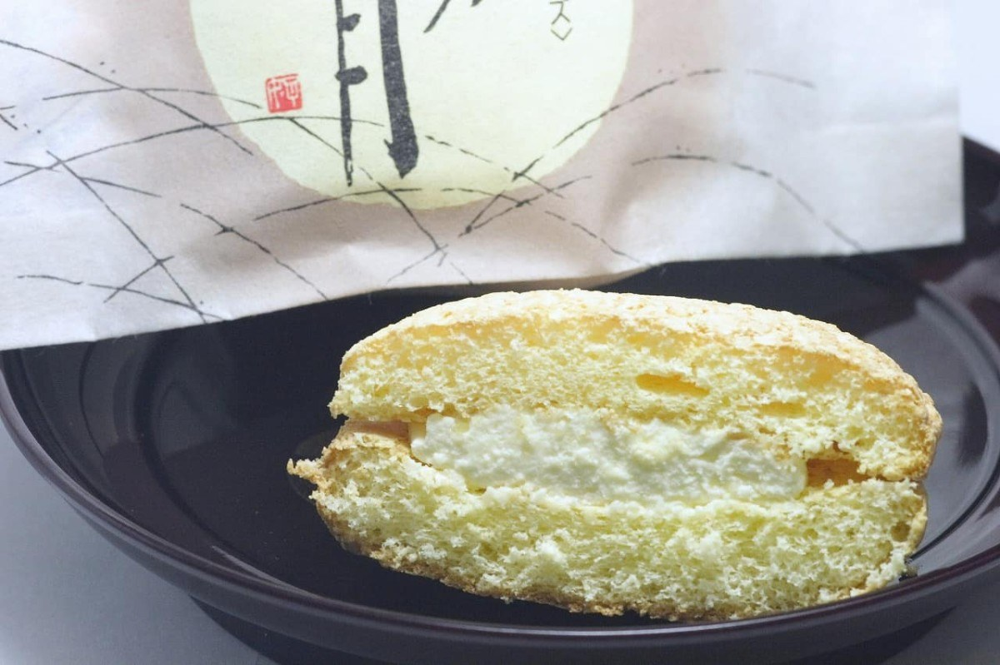
| 営業時間 | 9:00〜17:00 |
|---|---|
| 定休日 | 日曜 |
| 住所 | 鳥取県米子市角盤町3丁目100 |
| 予約 | 不要 — ☎ 0859-32-3277 ／ 公式サイト |
| 営業時間 | 8:30〜20:00 |
|---|---|
| 定休日 | 不明 |
| 住所 | 鳥取県米子市弥生町2 シャミネ米子2階 |
| 予約 | 不要 — 公式サイト |
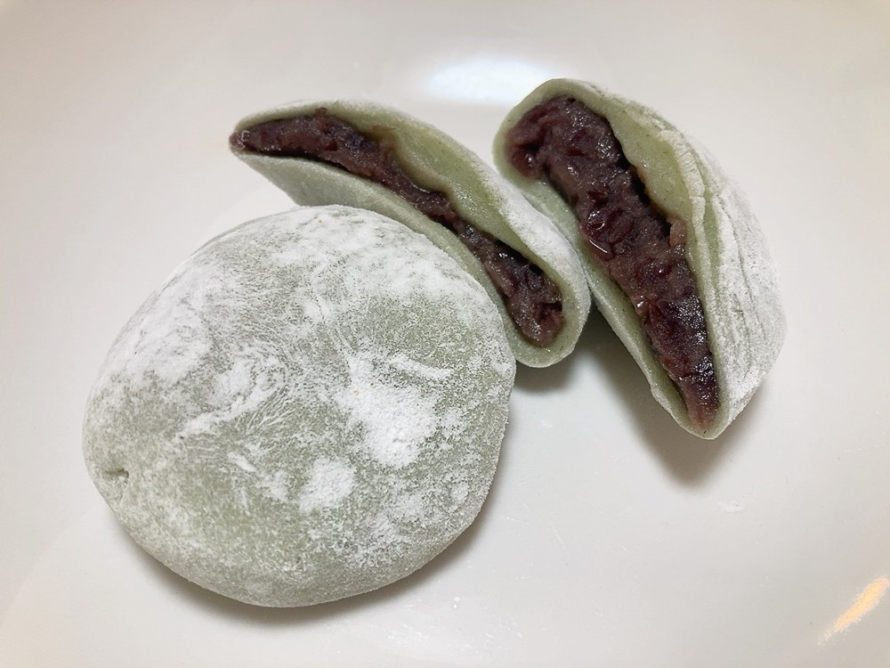
| 営業時間 | 8:00〜17:00 |
|---|---|
| 定休日 | 土曜・日曜・祝日 |
| 住所 | 鳥取県米子市塩町110 |
| 予約 | 不要 — ☎ 0859-33-5172 ／ 公式サイト |
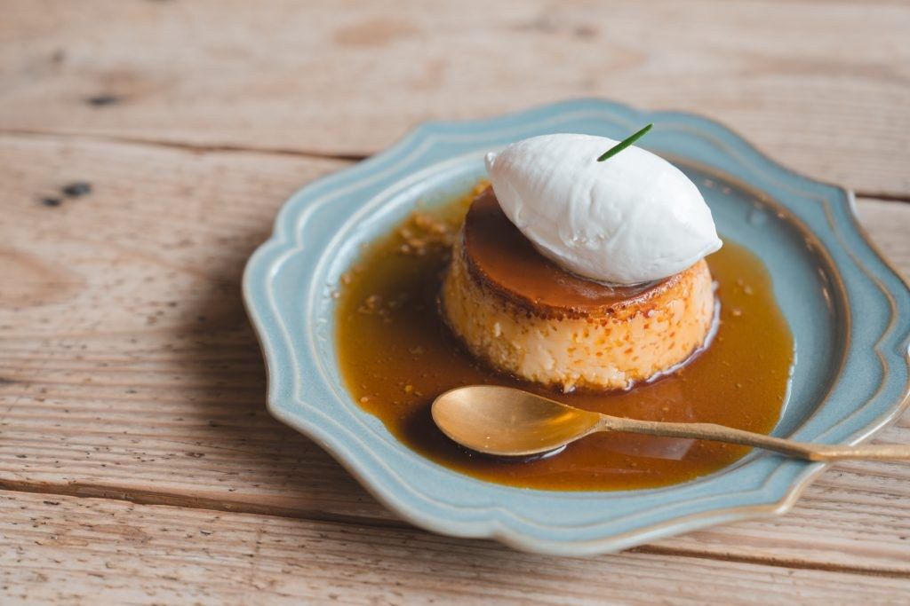
| 営業時間 | 11:00〜18:30 |
|---|---|
| 定休日 | 不定休（Instagramで告知） |
| 住所 | 鳥取県米子市日野町7 |
| 予約 | 不要 — ☎ 0859-57-8076 ／ 公式サイト |
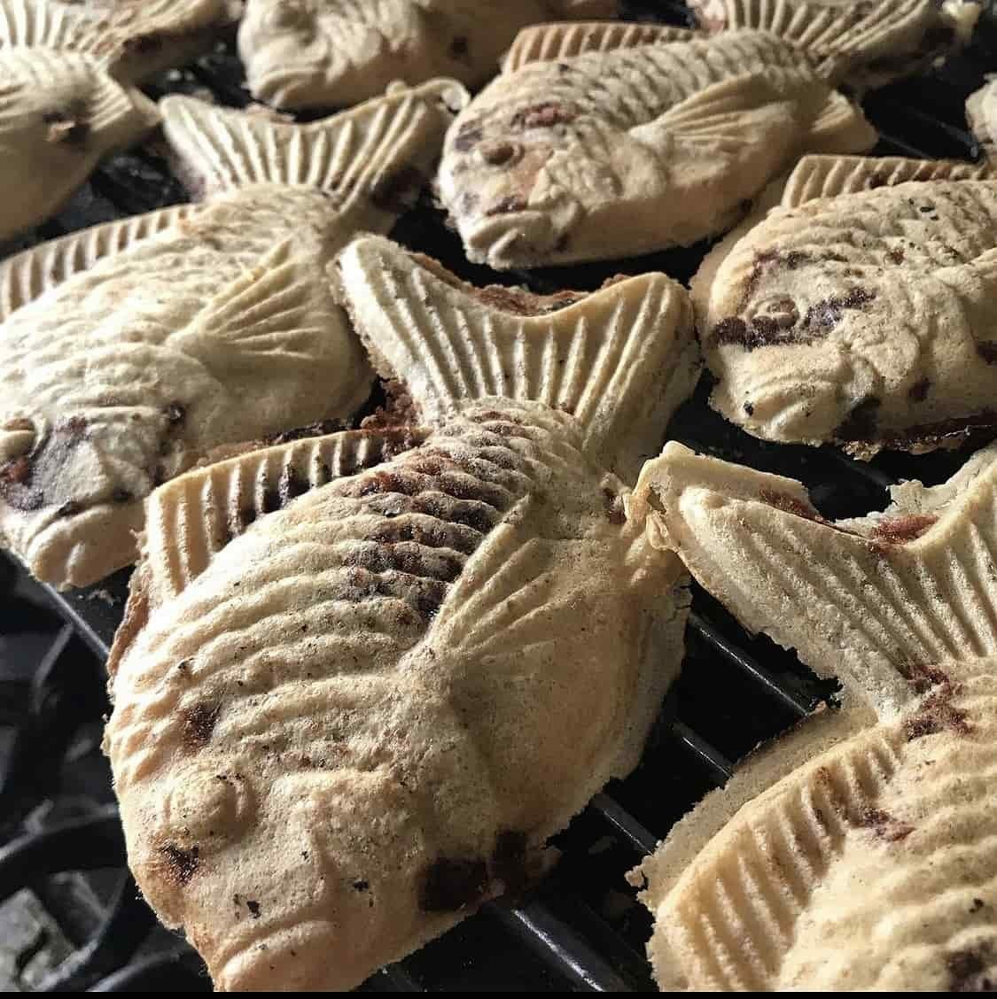
| 営業時間 | 10:00〜17:00 |
|---|---|
| 定休日 | 日曜・月曜・祝日（ほか不定休） |
| 住所 | 鳥取県米子市茶町56 |
| 予約 | 不要 — ☎ 0859-32-7769 ／ 公式サイト |
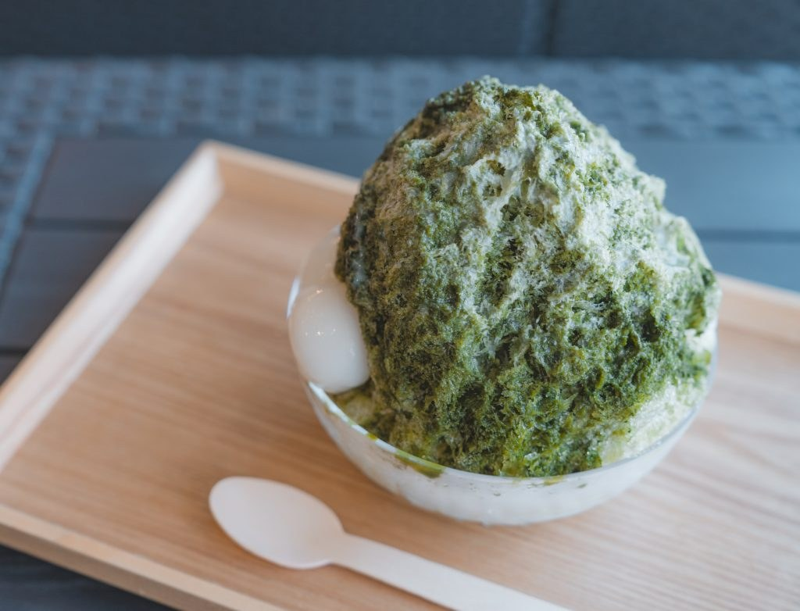
| 営業時間 | 10:00〜18:00 |
|---|---|
| 定休日 | 不定休（Instagramで告知） |
| 住所 | 鳥取県米子市皆生温泉3丁目2-7 |
| 予約 | 不要 — ☎ 080-3121-6971 ／ 公式サイト |
本ガイドは個人利用目的で作成。掲載情報は2026年10月時点の調査に基づく。写真出典: 各店の公式サイト・公式SNS、および地域情報サイト等の掲載写真（著作権は各サイト・各撮影者に帰属）。引用元は店ごとにカード内へ明記。